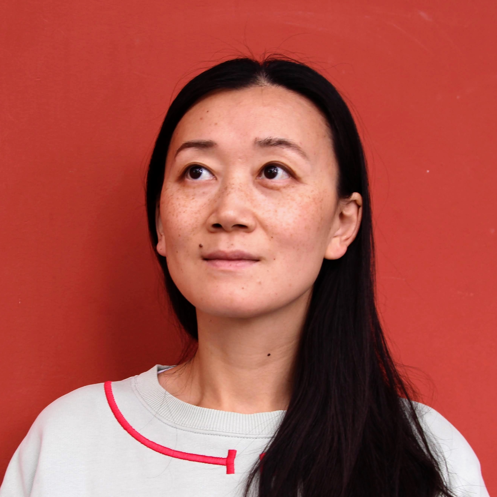

I am a food scientist and engineer.
I received my PhD in Mechanical Engineering & Materials Science from Harvard University in 2024. My research is on improving how humans eat in low-resource environments, with a focus on cooking in space (5-min video explaining my work). My PhD work was supported by the extraordinary NASA Space Technology Research Fellowship (it's evolved into the current NSTRGO; if you're a grad student working on space-related research, you must apply!). I draw widely from food science, aerospace engineering, systems engineering, and international development.
Previously, I spent 5 years as the food scientist at Modernist Cuisine, where I led technical R&D on the award-winning, extremely heavy, 5-volume Modernist Bread. I got my start in the field by designing and teaching classes on the science of cooking at Harvard and UCLA. I received my AB in Physics with a minor in Social Anthropology from Harvard in 2011.
I've also worked with the following organizations: Off Their Plate, Fundació Alícia, The Nordic Food Lab, and Black Sesame Kitchen.
Contact me at zhou6(at)fas.harvard.edu.
NEWS
Jun 2024: Throughout my career, I'm constantly making sense of where I've been and where I'm going. It's something that I'm good at, and frankly, can't afford to not do in order to execute on some of my wild ideas. A "gee, I wonder if others might want some help with their wild and crazy dreams..." convo that started when shooting the breeze with Yaniv Yacoby during InTouch leadership meetings in grad school is now a reality. Check out Larissa Zhou Coaching if you're interested in working with me in a career coaching capacity.
Apr 2024: I'm at MIT Media Lab's Beyond the Cradle conference and present about H0TP0T, my space cooking technology.
Sept 2023: I successfully defend my PhD dissertation "Cooking in Space: Food Systems and Technologies for Long-Duration Space Travel"! Thank you to all the friends, colleagues, and mentors who showed up in person and tuned in from afar. It was super fun to share what I had worked on for so long in a cohesive way. I even got to show the $10,000 orange clip from the comedy series Space Force as part of my motivation.
Aug 2023: I conduct an AMA with the thoughtful community members of Scope of Work. Full transcript here.
Jan 2023: I'm at APS CuWIP @ BU, giving a talk about my research through the lens of physics identity and belonging.
Dec 2022: I'm on This American Life! I talk about coming to terms with my neither-here-nor-there accent. And for the record, the library DID accept me as a book recorder, and I loved volunteering there.
Oct 2022: I'm at IAC, running an interactive session on Space Technology for Food System Resilience and Sustainability with co-conspirator Maggie Coblentz.
Sept 2022: Thank you to Harvard for putting together this 5-min video explainer about my work on H0TP0T.
Aug 2022: I stand up in front of strangers and talk about the supreme delight and fear of doing research on The Story Collider (start 15"20").